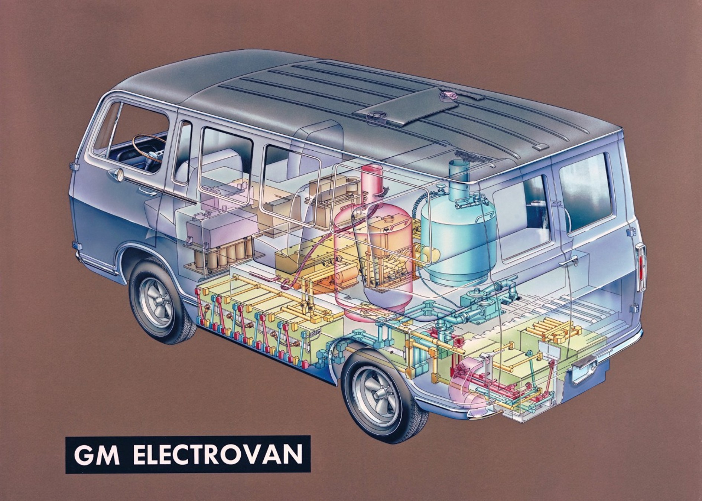
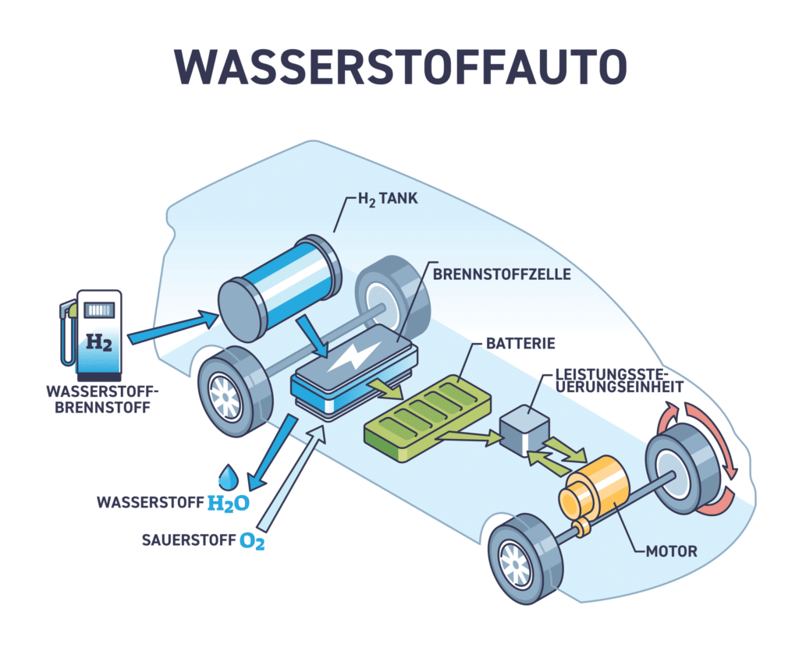

Wie hat sich das Wasserstoffauto technisch und hinsichtlich seiner
Verbreitung von den ersten Fahrzeugen bis heute entwickelt?
Einleitung
Wasserstoff wird seit vielen Jahren als mögliche Alternative für
den Verkehr betrachtet. Dabei stellt sich die Frage, welche Rolle
wasserstoffbetriebene Fahrzeuge in der Entwicklung des Verkehrs
einnehmen können. Die Entwicklung des Wasserstoffautos umfasst
dabei sowohl technische Veränderungen als auch Veränderungen in
seiner Verbreitung.
Im Mittelpunkt dieser Arbeit steht die Entwicklung des
Wasserstoffautos. Dabei wird sowohl die technische Entwicklung als
auch die Veränderung seiner Verbreitung betrachtet. Von Interesse
ist insbesondere, welche Veränderungen im Laufe der Zeit
stattgefunden haben und welchen Stellenwert das Wasserstoffauto
heute einnimmt.
Die wichtigsten Meilensteine
1807
Wróbel et al. beschreiben, dass sich die Entwicklung von den
ersten experimentellen Wasserstofffahrzeugen bis zu heutigen
Serienfahrzeugen über mehr als 200 Jahre erstreckte. Ein früher
Meilenstein war das Fahrzeug des Schweizer Erfinders François
Isaac de Rivaz. Er entwickelte Anfang des 19. Jahrhunderts
einen Verbrennungsmotor, der mit einem Wasserstoff-Sauerstoff-Gemisch
betrieben wurde. 1807 setzte er diese Technik in einem
experimentellen Fahrzeug ein. Damit gehörte er zu den ersten
Personen, die einen Wasserstoffantrieb mit Verbrennungsmotor
praktisch erprobten. (Wróbel et al. 2022)
1966
Gemäss General Motors entwickelte das Unternehmen 1966 mit dem
Electrovan das erste Brennstoffzellenfahrzeug. Hier wurde
Wasserstoff nicht verbrannt, sondern in einer Brennstoffzelle
zur Erzeugung elektrischer Energie verwendet. Das Fahrzeug war
jedoch noch ein Versuchsprojekt und für einen normalen Einsatz
auf öffentlichen Strassen zu aufwendig. (General Motors
[Hrsg.] 2025)

Abbildung 5: Der GM Electrovan von 1966, eines der ersten
Brennstoffzellenfahrzeuge
2014
Nach Angaben der Toyota Motor Corporation erfolgte ein
entscheidender Schritt 2014 mit dem Toyota Mirai. Toyota begann
Ende 2014 mit dem Verkauf des Mirai in Japan und brachte damit
ein Brennstoffzellenfahrzeug in Serie. Der Mirai besass
Wasserstofftanks, eine Brennstoffzelle und einen Elektromotor.
Die Betankung dauerte nur wenige Minuten, wodurch sich das
Fahrzeug in diesem Punkt ähnlich wie ein herkömmliches Auto
nutzen liess. (Toyota Motor Corporation [Hrsg.] 2014)
2018
Laut Hyundai Motor Switzerland folgte 2018 der Hyundai Nexo.
Verbessert wurden gegenüber früheren Fahrzeugen unter anderem
die Brennstoffzelle, die Reichweite und die Integration der
Technik, womit die Brennstoffzellentechnik für den alltäglichen
Einsatz weiterentwickelt wurde. (Hyundai Motor Switzerland
[Hrsg.] 2018)
Technische Entwicklung
Der ADAC beschreibt, dass moderne Wasserstoffautos Wasserstoff
normalerweise unter hohem Druck speichern, meist bei 700 bar.
Während der Fahrt wird er in der Brennstoffzelle mit Sauerstoff
umgesetzt. Dabei entsteht elektrische Energie, die den Elektromotor
antreibt. Als direkte Reaktionsprodukte entstehen Wasser und Wärme.
Die dabei entstehende elektrische Energie treibt den Elektromotor
an. Moderne Brennstoffzellenfahrzeuge verfügen zusätzlich über eine
Batterie, die unter anderem bei der Rekuperation beim Bremsen
Energie aufnehmen kann. Damit funktioniert ein Wasserstoffauto mit
Brennstoffzelle grundsätzlich ähnlich wie ein Elektroauto, benötigt
jedoch keine grosse Batterie, um die gesamte Antriebsenergie zu
speichern. (ADAC [Hrsg.] 2025)

Abbildung 6: Schematischer Aufbau eines Wasserstoffautos mit Brennstoffzelle
Wie die Hyundai Motor Company mitteilt, wurden im Laufe der
Entwicklung die Brennstoffzellen leistungsfähiger und kompakter.
Auch Reichweite und Tankzeiten verbesserten sich. Die 2025
vorgestellte zweite Generation des Hyundai Nexo soll beispielsweise
eine Reichweite von mehr als 700 Kilometern ermöglichen und
innerhalb weniger Minuten betankt werden können. (Hyundai Motor
Company [Hrsg.] 2025)
Laut dem ADAC ist für die Umwelt jedoch entscheidend, wie der
Wasserstoff hergestellt wird. Wird er mit fossilen Energieträgern
produziert, entstehen bereits bei der Herstellung
Treibhausgasemissionen. Bei erneuerbar erzeugtem Wasserstoff ist die
Klimabilanz deutlich günstiger. (ADAC [Hrsg.] 2025)
Verbreitung heute
Nach Einschätzung des ADAC hat sich das Wasserstoffauto trotz der
technischen Fortschritte bisher nur wenig verbreitet. In
Deutschland wurden 2024 beispielsweise lediglich 148 Toyota Mirai
neu zugelassen. Gleichzeitig gab es 2025 ungefähr 100 öffentliche
Wasserstofftankstellen. Teilweise wurden sogar Tankstellen
stillgelegt, weil die Nachfrage zu gering war. (ADAC [Hrsg.] 2025)
Die Internationale Energieagentur (IEA) berichtet, dass auch
weltweit der Markt für Brennstoffzellen-Personenwagen klein bleibt.
Laut Internationaler Energieagentur wurden 2024 weniger als 5'000
Brennstoffzellenautos verkauft. Gleichzeitig wächst die Bedeutung
von Brennstoffzellen bei schweren Nutzfahrzeugen, insbesondere bei
Lastwagen. In diesem Bereich können insbesondere die kurze
Betankungszeit und die Möglichkeit längerer Reichweiten Vorteile
bieten. (IEA [Hrsg.] 2025)
Wie die IEA zeigt, sind eine grosse Konkurrenz batterieelektrische
Fahrzeuge. 2025 wurden weltweit mehr als 20 Millionen Elektroautos
verkauft. Damit war ungefähr jedes vierte neu verkaufte Auto
elektrisch. Im Vergleich dazu ist das Wasserstoffauto weiterhin
eine Nischentechnologie. (IEA [Hrsg.] 2026)
Fazit
Das Wasserstoffauto hat sich seit seinen ersten Entwicklungen
technisch deutlich verändert. Aus frühen Versuchen entstanden über
die Jahre immer leistungsfähigere Fahrzeuge, bis hin zu heutigen
Serienfahrzeugen. Dabei verbesserten sich unter anderem die
Reichweite, die Betankungszeit und die technische Umsetzung.
Hinsichtlich seiner Verbreitung zeigt sich jedoch, dass das
Wasserstoffauto bisher nur eine geringe Rolle im Personenverkehr
spielt. Im Vergleich zu batterieelektrischen Fahrzeugen konnte es
sich deutlich weniger durchsetzen. Gleichzeitig bietet der
Wasserstoffantrieb insbesondere bei schweren Fahrzeugen und langen
Strecken mögliche Vorteile.
In Bezug auf die Fragestellung lässt sich somit folgendes sagen:
Das Wasserstoffauto hat sich technisch stark weiterentwickelt,
konnte sich hinsichtlich seiner Verbreitung bisher jedoch nur
begrenzt durchsetzen. Seine zukünftige Bedeutung wird deshalb vor
allem davon abhängen, in welchen Bereichen seine technischen
Vorteile gegenüber anderen Antrieben tatsächlich benötigt werden.